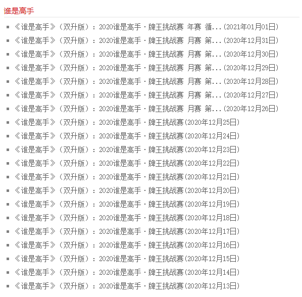

序言 高中三年陪伴我最久的电视节目就是《谁是高手 · 双升》，天天中午吃饭必看。后来上了大学之后，开始在山西网络广播电视台 观看，但是该网站更新到2121年1月1日的视频之后就不更新了。后来发现只能通过《黄河plus》APP观看直播或者重播了。但是这个APP的观看体验不是很好，无法像其他的视频APP一样方便的快进或者快退。于是写了如下的代码，用来爬取《黄河plus》中《谁是高手 · 双升》的视频。

1. 抓取APP数据包 （1）获取视频链接 用Fiddler抓取手机APP《黄河plus》的数据包(Fiddler抓取手机数据包的教程可以自行百度)。如下图所示：
注： 采用Fiddler抓取数据包需要在手机上配置代理，可能会导致某些APP无法联网，很不幸的是我爬取的《黄河plus》APP就在其中。通过网上教程去修改注册表没有成功，在酷安上找到解决办法，在Edxp中刷入TrustMeAlready模块即可解决。
根据上图，我们可以分析出《黄河plus》首先通过https://livehhhttps.sxrtv.com/lsdream/g5tlpe0/800/1625547000000,1625556000000.m3u8来获取指定时间段内的所有ts视频文件，然后在分别下载ts视频并播放。其中1625547000000和1625556000000分别为指定时间范围对应的时间戳。m3u8的文件内容如下图所示。
1 2 3 4 5 6 7 8 9 10 11 12 13 14 15 16 17 18 #EXTM3U #EXT-X-VERSION:3 #EXT-X-PLAYLIST-TYPE:VOD #EXT-X-TARGETDURATION:10 #EXT-X-MEDIA-SEQUENCE:0 #EXTINF:10 , 1625500800000 /46204149D10.ts#EXTINF:10 , 1625500800000 /46214358D10.ts#EXTINF:10 , 1625500800000 /46225030D10.ts#EXTINF:10 , 1625500800000 /46234272D10.ts#EXTINF:10 , 1625500800000 /46244605D10.ts#EXTINF:10 , 1625500800000 /46255118D10.ts ...
可以发现m3u8的返回值包含该时间范围内的所有ts文件，并且ts文件下载的链接地址和获取m3u8的url地址前缀相同。所以《谁是高手》视频链接已经获取成功。
（2）获取每天随机字符串的url地址 后来在测试代码的时候，无意中发现视频下载地址的url中“g5tlpe0”字符串每天都不一样，是一个随机的值，这就非常头疼， 不可能每天修改代码，于是继续上述的抓取《黄河plus》数据包过程。经过不懈的努力，终于发现了一个很重要的url地址，如下图所示：
1 2 3 4 5 6 7 8 9 10 request: https://dyhhplus.sxrtv.com/apiv3.8//m3u8.php?token=*** response: { "status":1, "message":"成功", "address":"", "tss":"g5tlpe0" }
从图中红框中的url中可以看出，该url地址的响应中包含一个“tss”字段，其值对应的就是每天随机的字符串。所以现在只要能获取到这个地址中的token参数即可。
（3）破解Token 在Fiddler中没有找到Token的任何信息，于是直接通过BlackDex + Jadx的方式，将《黄河plus》的APK安装包进行反编译。
注: BlackDex用来给APP脱壳，并生成APP的dex文件
注: Jadx用来将dex文件反编译出APP的源码
在源码中通过一顿猛如虎的瞎操作后，终于找到了生成Token的源码位置，如下所示。下面展示的源码是获取随机字符串的url调用位置。
1 2 3 4 5 6 7 8 9 10 11 12 13 14 15 16 17 18 19 20 21 22 23 24 25 26 27 public void getLiveUrl (String str, String str2) throws UnsupportedEncodingException Utils.OkhttpGet().url(NetApi.M3U8).addParams("token" , (Object) String.valueOf(getLiveUrl.getLiveToken(str, str2))).build().execute(new StringCallback() { @Override public void onError (Call call, Exception exc) NewLiveJMDActivity.this .dialog.cancel(); NewLiveJMDActivity.this .initVideo(); } public void onResponse (Call call, String str) NewLiveJMDActivity.this .dialog.cancel(); if (Utils.getErrMsg(str).contains("成功" )) { NewLiveJMDActivity.this .mVideoUrl = Utils.getOtherMegString(str, ConstantValues.ADDRESS); if (!NewLiveJMDActivity.this .mVideoUrl.contains("http" )) { NewLiveJMDActivity newLiveJMDActivity = NewLiveJMDActivity.this ; newLiveJMDActivity.mVideoUrl = NetApi.getPHPURL() + NewLiveJMDActivity.this .mVideoUrl; } NewLiveJMDActivity.this .mTss = Utils.getOtherMegString(str, "tss" ); NewLiveJMDActivity.this .initVideo(); return ; } NewLiveJMDActivity.this .initVideo(); } }); }
继续深入查看getLiveToken函数。从源码可以可以看出，getLiveToken将给定的两个字符串经过md5求值之后通过一系列截取拼接得到一个字符串，然后将该字符串与当前获取的时间拼接后也进行md5求值，之后经过一系列乱七八糟的步骤返回。这个str4即为最终的token。
1 2 3 4 5 6 7 8 9 10 11 12 13 14 15 16 17 18 19 20 21 22 23 24 25 26 27 28 29 30 31 32 33 34 35 36 37 38 39 40 41 42 43 44 45 46 47 48 49 50 51 52 53 public static String getLiveToken (String str, String str2) throws UnsupportedEncodingException String str3 = (System.currentTimeMillis() / 1000 ) + "" ; String md52 = getMd5(str + "Tide" + str2); StringBuilder sb = new StringBuilder(); int i = 0 ; sb.append(md52.substring(0 , 2 )); sb.append(md52.substring(4 , 8 )); sb.append(md52.substring(14 , 15 )); sb.append(md52.substring(13 , 14 )); sb.append(md52.substring(12 , 13 )); sb.append(md52.substring(25 , 29 )); sb.append(md52.substring(30 , 31 )); sb.append(md52.substring(29 , 30 )); sb.append(md52.substring(28 , 29 )); sb.append(md52.substring(27 , 28 )); sb.append(md52.substring(26 , 27 )); String md53 = getMd5("tide" + str3 + sb.toString()); String replace = new String(C0196Base64.encodeBase64(("t=" + str3 + "&c=" + str + "&a=" + str2 + "&v=" + (md53.substring(4 , 5 ) + md53.substring(16 , 17 ) + md53.substring(31 , 32 ) + md53.substring(17 , 18 ) + md53.substring(8 , 9 ))).getBytes("UTF-8" ))).replace(ContainerUtils.KEY_VALUE_DELIMITER, HiAnalyticsConstant.REPORT_VAL_SEPARATOR); String trim = Pattern.compile("[^1-9]" ).matcher(replace).replaceAll("" ).trim(); ArrayList arrayList = new ArrayList(); while (i < trim.length()) { int i2 = i + 1 ; String substring = trim.substring(i, i2); if (!arrayList.contains(Integer.valueOf(Integer.parseInt(substring)))) { arrayList.add(Integer.valueOf(Integer.parseInt(substring))); } i = i2; } Iterator it = arrayList.iterator(); while (it.hasNext()) { System.out.println(((Integer) it.next()).intValue()); } Iterator it2 = arrayList.iterator(); String str4 = replace; while (it2.hasNext()) { int intValue = ((Integer) it2.next()).intValue(); if (intValue % 2 == 0 ) { String substring2 = replace.substring(intValue - 1 , intValue); if ("abcdefghigklmnopqrstuvwxyzABCDEFGHIGKLMNOPQRSTUVWXYZ" .indexOf(substring2) != -1 ) { int indexOf = ("abcdefghigklmnopqrstuvwxyzABCDEFGHIGKLMNOPQRSTUVWXYZ" .indexOf(substring2) + (intValue * intValue)) % 52 ; str4 = replaceSomeWhere(str4, "abcdefghigklmnopqrstuvwxyzABCDEFGHIGKLMNOPQRSTUVWXYZ" .substring(indexOf, indexOf + 1 ), intValue); } } else { String substring3 = replace.substring(intValue - 1 , intValue); if ("abcdefghigklmnopqrstuvwxyzABCDEFGHIGKLMNOPQRSTUVWXYZ" .indexOf(substring3) != -1 ) { int indexOf2 = ("abcdefghigklmnopqrstuvwxyzABCDEFGHIGKLMNOPQRSTUVWXYZ" .indexOf(substring3) + intValue) % 52 ; str4 = replaceSomeWhere(str4, "abcdefghigklmnopqrstuvwxyzABCDEFGHIGKLMNOPQRSTUVWXYZ" .substring(indexOf2, indexOf2 + 1 ), intValue); } } } return str4; }
在知道《黄河plus》的程序员小哥哥是如何编写token之后，就可以直接开始模仿了，Python直接将上述的逻辑复现一遍如下：
1 2 3 4 5 6 7 8 9 10 11 12 13 14 15 16 17 18 19 20 21 22 23 24 25 26 27 28 29 30 31 32 33 34 35 36 37 38 39 40 41 42 43 44 45 46 47 48 49 50 51 52 53 54 55 56 57 58 59 60 61 62 63 64 65 import base64import datetimeimport hashlibimport rezm_constant = "abcdefghigklmnopqrstuvwxyzABCDEFGHIGKLMNOPQRSTUVWXYZ" def getMd5 (s ): md52 = hashlib.md5(s.encode("utf-8" )).digest() result = "" for b in md52: i = b & 255 result += '{:02x}' .format (i) return result def replaceSomeWhere (str4, des_str, index ): if index != 1 : return str4[0 :index - 1 ] + des_str + str4[index:] else : return des_str + str4[index:] def getToken (str1, str2 ): result = "" md52_str = getMd5(str1 + "Tide" + str2) result += md52_str[0 :2 ] result += md52_str[4 :8 ] result += md52_str[14 :15 ] result += md52_str[13 :14 ] result += md52_str[12 :13 ] result += md52_str[25 :29 ] result += md52_str[30 :31 ] result += md52_str[29 :30 ] result += md52_str[28 :29 ] result += md52_str[27 :28 ] result += md52_str[26 :27 ] str3 = int (datetime.datetime.now().timestamp()) md53_str = getMd5("tide" + str (str3) + result) replace = base64.b64encode(("t=" + str (str3) + "&c=" + str1 + "&a=" + str2 + "&v=" + md53_str[4 :5 ] + md53_str[16 :17 ] + md53_str[31 :32 ] + md53_str[17 :18 ] + md53_str[ 8 :9 ]).encode( "utf-8" )).decode().replace( "=" , "|" ) dig_list = re.findall("[1-9]" , replace) dig_list = list (set (dig_list)) str4 = replace for dig in dig_list: dig = int (dig) if dig % 2 == 0 : sub1 = replace[dig - 1 :dig] if zm_constant.index(sub1) != -1 : indexOf = (zm_constant.index(sub1) + (dig * dig)) % 52 str4 = replaceSomeWhere(str4, zm_constant[indexOf:indexOf + 1 ], dig) else : sub2 = replace[dig - 1 :dig] if zm_constant.index(sub2) != -1 : indexOf = (zm_constant.index(sub2) + dig) % 52 str4 = replaceSomeWhere(str4, zm_constant[indexOf:indexOf + 1 ], dig) return str4
经过测试可以成功拿到“g5tlpe0”返回值。下面终于可以编写下载视频的代码了。
2. 编写下载视频代码 1 2 3 4 5 6 7 8 9 10 11 12 13 14 15 16 17 18 19 20 21 22 23 24 25 26 27 28 29 30 31 32 33 34 35 36 37 38 39 40 41 42 43 44 45 46 47 48 49 50 51 52 53 54 55 56 57 58 59 60 61 62 63 64 65 66 67 68 69 70 71 72 73 74 75 76 77 78 79 80 81 82 83 84 85 86 87 88 89 90 91 92 93 94 95 96 97 98 99 100 101 102 103 import jsonimport threadingimport timeimport requestsimport queueimport osimport subprocessimport datetimefrom generateToken import getTokenstartTime = (datetime.datetime.now() - datetime.timedelta(days=1 )).strftime("%Y-%m-%d 17:25:00" ) end_time = (datetime.datetime.now() - datetime.timedelta(days=1 )).strftime("%Y-%m-%d 18:45:00" ) video_url = "https://dyhhplus.sxrtv.com/apiv3.8//m3u8.php?token=" urlDownload = "https://livehhhttps.sxrtv.com/lsdream/%s/800/" ts_path = "D:/谁是高手/" + startTime.split(' ' )[0 ] + "/" def getDownload (): startTimeStamp = int (time.mktime(time.strptime(startTime, "%Y-%m-%d %H:%M:%S" ))) * 1000 endTimeStamp = int (time.mktime(time.strptime(end_time, "%Y-%m-%d %H:%M:%S" ))) * 1000 return urlDownload + str (startTimeStamp) + "," + str (endTimeStamp) + ".m3u8" def getUrlList (resp ): text = resp.text urlList = queue.Queue() for line in text.split('\n' ): if line.find(".ts" ) != -1 : urlList.put(line) return urlList def download (data ): while True : try : url = data.get_nowait() except Exception as e: break resp = requests.get(urlDownload + url, stream=True ) if not os.path.exists(ts_path): os.makedirs(ts_path) ts_file = ts_path + str (url).split('/' )[1 ] if not os.path.exists(ts_file): with open (ts_file, "wb+" ) as f: for chunk in resp.iter_content(chunk_size=1024 ): if chunk: f.write(chunk) print (str (url).split('/' )[1 ] + "下载完成" ) else : print (str (url).split('/' )[1 ] + "文件已经存在" ) def mergeTsToMp4 (ts_file_path ): fileList = os.listdir(ts_file_path) ts_list = [] for file in fileList: ts_list.append(file) shell_str = '+' .join(ts_list) shell_str = "copy /b " + shell_str + " " + startTime.split(' ' )[0 ] + "谁是高手.mp4" os.chdir(ts_file_path) subprocess.run(shell_str, shell=True , stdout=subprocess.PIPE, stderr=subprocess.PIPE) for file in fileList: if file.find("ts" ) != -1 : os.remove(file) print ("ts文件合并完成" ) if __name__ == '__main__' : token = getToken("lce1mC4" , "jushilive" ) text = requests.get(video_url + token).text rand_str = json.loads(text)['tss' ] url_download = getDownload() % rand_str print ("正在获取所有的ts文件下载地址：" + url_download) response = requests.get(url_download) threadNum = 5 thread_list = [] if response.status_code == 200 : start_time = time.time() data_url = getUrlList(response) size = data_url.qsize() for i in range (threadNum): t = threading.Thread(target=download, args=(data_url,)) thread_list.append(t) for t in thread_list: t.start() t.join() end_time = time.time() print (str (size) + "个文件全部下载完成" ) print ("总共用时 " + str (end_time - start_time) + "秒" ) mergeTsToMp4(ts_path) input ("请按任意键结束..." ) else : print ("调用失败" )
核心代码已经进行了注释，代码的编写思路如下：
生成Token
利用Token从指定url地址获取“随机字符串”的值
指定需要下载视频的时间范围(谁是高手的时间范围为17:25 - 18:45，共计1小时20分钟)
从给定url地址下载m3u8文件，并从中获取所有需要下载的ts文件
多线程下载所有的ts文件，并将所有的ts文件合并为一个mp4视频文件
删除下载的所有ts文件
3. 收尾 将Python程序打包为exe可执行文件后，加入到Window的任务计划程序中，每天凌晨2点执行一次即可。至此整个爬取《谁是高手 · 双升》的流程到此结束。